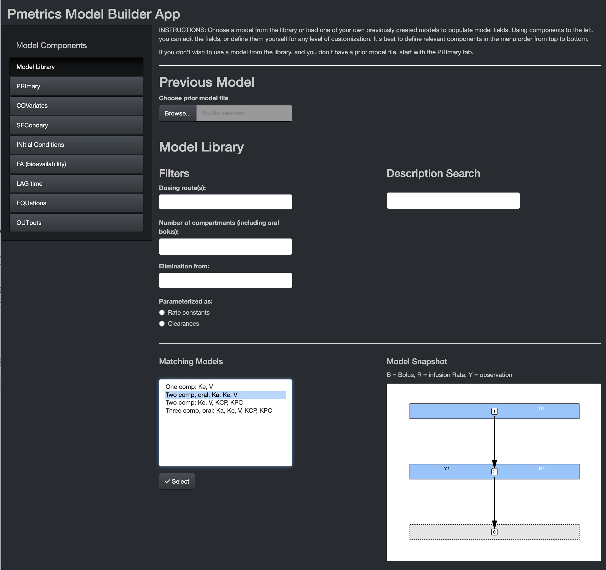
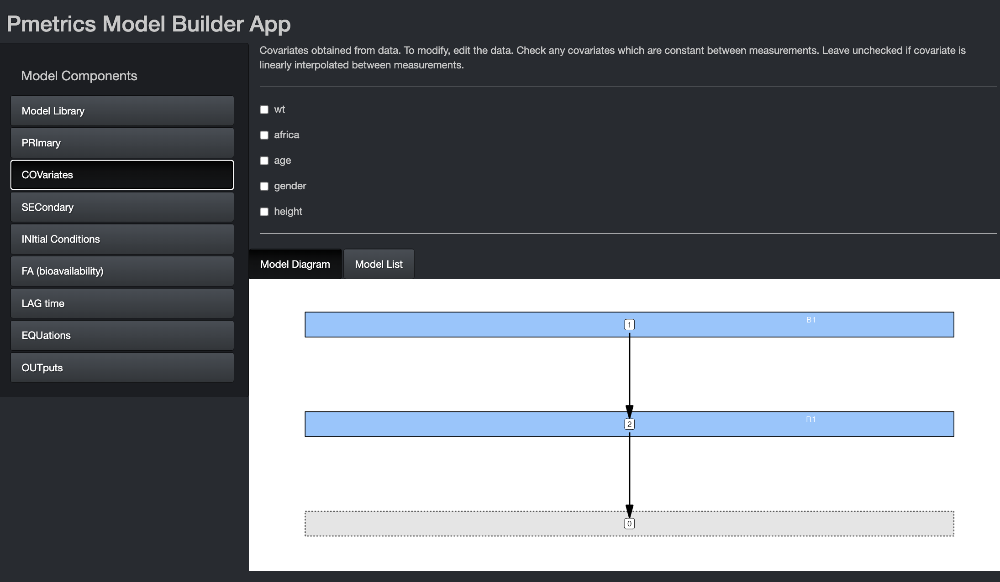
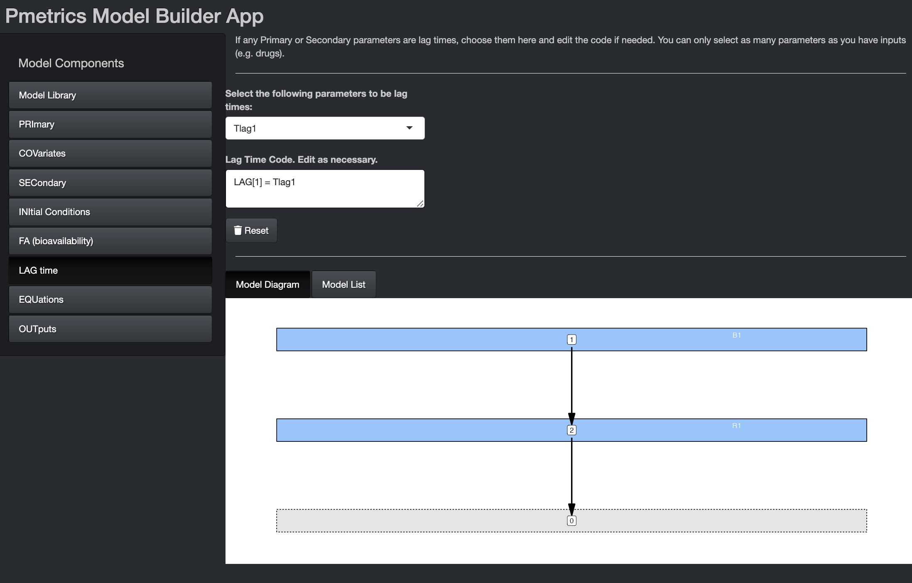
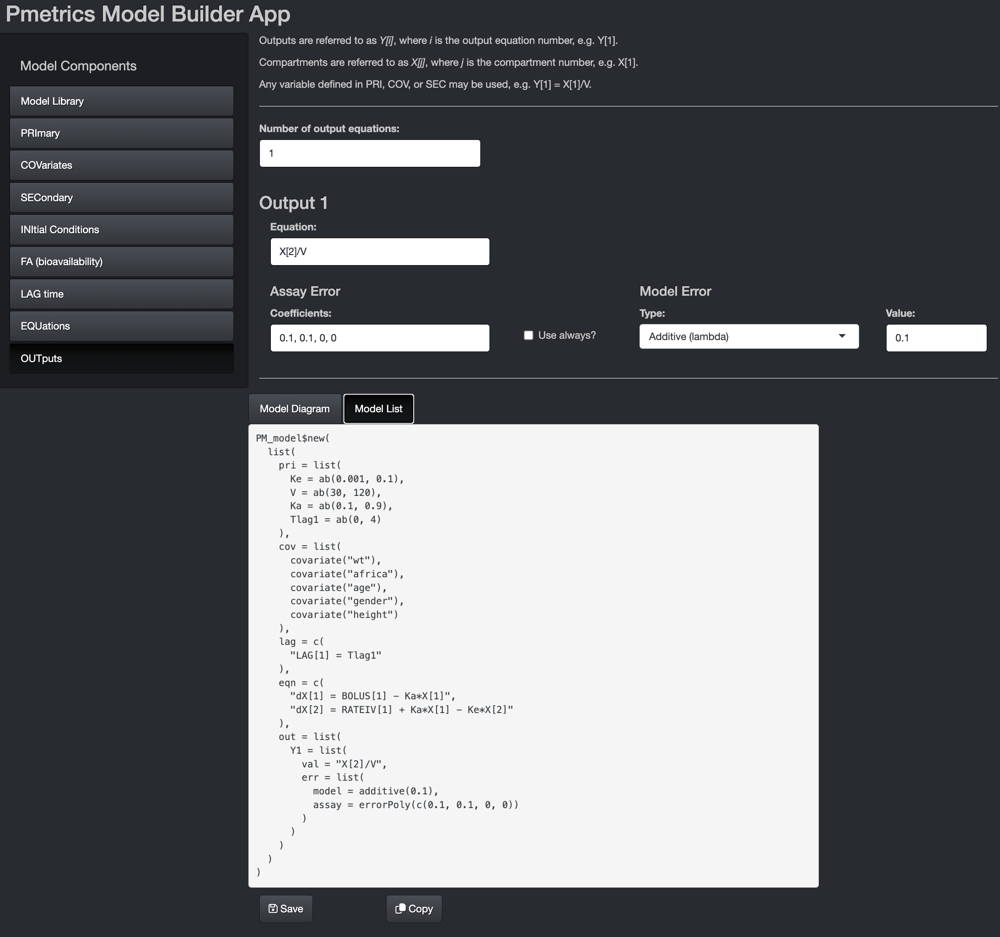

About this tutorial
Welcome to the Pmetrics model fitting tutorial. This tutorial will briefly introduce you to the R programming language and the Pmetrics modeling framework. The main topics of this tutorial are:
- Create and manipulate
PM_dataandPM_modelobjects. - Use those objects to create a
PM_fitobject. - Learn how to interact with the
PM_fitobject and execute it. - Interact with the
PM_resultobject.
NOTE: to open hyperlinks in a new tab:
- Mac: ⌘ + click
- Windows/Linux: Ctrl + click
R and Pmetrics basics
This is by no means an exhaustive R tutorial. We will only cover the basics needed to execute Pmetrics and work through the tutorial.
R is an interpreted, dynamic-typed, object oriented programming language, it is mainly used by data scientist and researchers around the world to perform data analysis, statistical inference, data visualization, and even artificial intelligence.
At any point, you can get help by typing ?function_name in the R console (the lower left window pane in RStudio).
Try getting help for plot.PM_op().
#You don't need to include the parentheses when asking for help.?plot.PM_opWhen you begin an R script you must always load Pmetrics, because the data and functions in the package are not automatically available to you when you start R/Rstudio. You don’t need to execute the following command in this tutorial because we’ve done it for you already, but you should include it in every Pmetrics script of your own.
library(Pmetrics)Script structure and comments
As you develop R scripts that have your analyses, it is useful to annotate with comments so that you can remember what you did later! Comment lines in R begin with “#”. A script might look like this.
library(Pmetrics)
# Run 1 - tlag, ka, kel, vol
setwd("My_project/src")
dat <- PM_data$new("data.csv")
mod <- PM_model$new("model.txt")
setwd("My_project/Runs")
fit <- PM_fit$new(dat, mod)
fit$run(intern = TRUE)
run1 <- PM_load(1)
# more code...
# Run 2 - change parameter ranges.
# more code...
# Run 3...
# ...Don’t worry about the details now. We’ll cover all this in the tutorial. In your scripts, including in the above example, you will need to tell R which directory your files are in. This is called the “working directory” in R.
Include the full path or path relative to your current working directory in quotes between the parentheses. Windows users: Make sure that you separate directories with a forward slash “/” or double backslashes “\\”. Unfortunately, Windows is the only OS that uses backslashes “\”, so R conforms to Unix/Linux style.
Examples:
- “~/LAPKB/Pmetrics/Examples” for Mac/Linux users
- “C:/LAPKB/Pmetrics/Examples” for Windows users
If that sets the working directory, how do you get the current working directory?
getwd() #the current working directory of this tutorial## [1] "/Users/mneely/LAPK/Development/Learn/inst/tutorials/1.Fitting_models"Data object
Pmetrics always needs data and a model, so for our run let’s first create our data object.
You can most easily create a new data object by reading a file that you made. You can read more details on data file format. Here we give you a file in the tutorial Examples/src folder. In your own project directories, you can look at this file directly by opening it in a spreadsheet program like Excel, or a text editor. To read the file into Pmetrics, use the code below.
exData <- PM_data$new("filename") #create a new PM_data object by reading a filewe have prepared a file named data.csv in the data
folder to serve as an example, let’s take a look at it:
read.csv("data/data.csv")Further information about the Pmetrics data format can be found here.
Now, you try reading the data.csv file from the data
folder and call the result exData.
exData <- PM_data$new("data/data.csv")When you create a PM_data object, you see a report of
any standardizations or fixes Pmetrics attempted. In this case (of
course), everything passed. exData is an R6 object, which
means that it contains both fields containing data and
methods to process that data. In R6, fields and methods are
accessed with the $.
To look at the structure of an object:
str(exData)You see the classes (PM_data and R6), and
public bins which are either functions (methods) or data (fields).
Private bins are not user-accessible, but are internal to R6 objects,
often, as in this case, to validate the object. This is the advantage of
the R6 framework, which is object oriented over the older but more
common S3 framework in R. Object oriented means that objects contain
both the data and the methods to work on that data, ensuring a more
stable environment than where functions and data are separate and
therefore not necessarily compatible.
Imagine if you have an object
my_vector <- c("apples","pears","bananas") and you tried
to do mean(my_vector). That is the S3 way and how legacy
Pmetrics worked. Under R6, you would have an object that only accepted
numerical data and contained the function to calculate the mean,
e.g. my_R6_object$data and
my_R6_object$mean(). Note that to activate methods, you
still need the parentheses, just like for functions in R.
So here is the way to see the original data field in our R6 PM_data
object called exData.
exData$data #original dataOr the standard data…
exData$standard_data #contains the standardized and validated dataAnd here’s how we can summarize it.
exData$summary() #a method to summarize the dataFor comparison, the same thing in the more common S3 framework in R:
summary(exData) #the S3 function to summarize the dataThe output is the same, but the way of getting it differs between R6 and S3.
Other examples of things that can be done with this object are
exData #view the original data in the viewer
exData$print(standard = T) #view the standardized data in the viewer
exData$print(viewer = F) #view original data in consoleYou can always learn more by typing ?PM_data into your R
console or by looking at its documentation.
Now, you try plotting exData
exData$plot()Model object
Model Library
PM_model
objects are used as a representation of one specific model we want to
fit to the data. It also contains some methods attached to it, but in
this tutorial we will mainly focus on the different ways to create
them.
The easiest way to build models is to use the Pmetrics Model Builder
App.
It can’t be displayed within this tutorial, but you can keep the
tutorial open while you play with the app. To launch the app, type the
following into your console: build_model(exData). This will
start the app with sample data that is the same as what we created with
exData. When you launch it, the first page you’ll see is
below.
Navigate with the model components sidebar.

Here you can choose from pre-existing models, either which you have created yourself and load with the Previous Model dialogue, or from the Pmetrics Model Library. Use the filters and description search to help select the model you want. Matching models will update in the box at the bottom. If you select one, you’ll see a model snapshot on the right.
In the snapshots, B is for bolus inputs, R is for Rate infusions (e.g. intravenous infusions), and Y is for observations. Arrows indicate the flow of drug. The grey compartment 0 is the environment.
Once you choose a model, hit the “Select” button at the bottom to populate remaining model components. Similarly, if you load a Previous Model, model components will be appropriately populated.
For this tutorial, choose the model with oral absorption and two compartments as shown in the snapshot above.
PRImary

In this tab, you can choose the number and names of the primary parameters. These are the parameters for which value probability distributions will be estimated. You can specify initial values as ranges or mean/SD. The mean is the mid point of a range and the SD is 1/6 of the range, i.e. 3 SD above and below the mean. If you omit the second value for a parameter (Max or SD), the parameter will become “fixed”, i.e. unknown value but zero variance in the population. In other words Pmetrics will estimate the value but make it the same for the whole population. The value you provide will be the starting estimate. If you check the constant option, it will fix the parameter to your value for every subject and not estimate. The GTZ option keeps the parameter positive, which is only relevant for parametric analysis, since nonparametric will respect parameter ranges strictly.
In the bottom you see the Model Diagram and the Model List. These dynamically build as you complete the Model Components. More about them later.
Make your PRImary component match the image in the tutorial.
COVariates

If you launch the Model Builder with a PM_data
object as an argument, the covariate tab will be pre-populated with the
covariates in the data file, as above. You can select any of them to
make them piece-wise constant, i.e. the value is held constant between
measurements. If left unchecked, covariate values will be linearly
interpolated between measurements.
Make your COVariate component match the image in the tutorial.
SECondary

Secondary variables are those that are defined by equations that are combinations of primary, covariates, and other secondary variables. If using secondary variables, define them first within this block. It is permissible to have conditional statements, but because expressions in this block are translated into variable declarations, expressions other than of the form “X = function(Y)” must be on a new line, prefixed by “&” and contain only variables which have been previously defined in the Primary, Covariate, or Secondary blocks.
The image shows examples of secondary variable declarations without conditions. Here are two examples of conditional secondary variables chosen on the basis of sex. The primary variables are Vm, Vf, CLm, and CLf.
V = Vm
&IF(sex == 1) V = Vf
V = Vm
CL = CLm
&IF(sex == 1) THEN
V = Vf
CL = CLF
ENDIFMake your SECondary component blank for the tutorial.
INItial conditions
In this tab you can change the default initial condition of any compartment from 0 to something else. It can be an equation, primary or secondary variable, or covariate. We’ll discuss more about the interface in the section on lag times.
FA (bioavailability)
In this tab you can change the default bioavailability of any bolus input from 1 to something else. It can be an equation, primary or secondary variable, or covariate. We’ll discuss more about the interface in the section on lag times.
LAG time

In this tab you can change the default delay in absorption of any bolus input from 0 to something else. It can be an equation, primary or secondary variable, or covariate. If you wish to use any of the latter three, select them from the drop down and the equation will pre-populate, as shown in the image. You can edit the equation or write your own equation. This is true for initial conditions and bioavailability in their tabs.
Make your LAG time component match the image in the tutorial.
EQuatioNs

Here you specify the equations that define the structural model,
i.e., the mathematical expressions that relate input (dose) to output
(measurements). Use dX[i] for change in compartment
amounts, where i is the compartment number, e.g. dX[1] or dX[2].
Compartment amounts are referred to as X[i], e.g. X[1] or
X[2]. Use BOLUS[j] for bolus input j and
RATEIV[k] for infusion k. j and k correspond to the INPUT
column in the data file, which is usually omitted and assumed to be 1
for all doses. The DUR column in the data file determines
whether a dose is treated as a BOLUS (DUR = 0) or RATEIV (DUR > 0).
Any variable defined in PRI, COV, or SEC may be used in your
equations.
Make your EQN component match the image in the tutorial.
OUTputs

Output equations define the relationship between a compartment amount
and a measured value. For drugs, that will usually be in the form of
X[.] divided by the volume for that compartment, where “.” is again the
compartment number. Write the specific equation in the appropriate field
in this tab. Output numbers correspond to the outeq column
of the data file, which might be missing (and assumed to be 1) when only
only one output equation is needed.
Every output equation must have an associated set of error polynomial coefficients to describe the assay noise associated with measuring that ouput. See the article on models for more details. The default behavior is to use the coefficients in the data file if they exist, and only if absent use these coefficients here. The “Use always?” option overrides this default to use these coefficients regardless of what is in the data file.
Currently, you can model residual noise as additive (lambda) or multiplicative (gamma), with a starting value for the optimization. Alternatively, you can fix the noise term.
Make your OUT component match the image in the tutorial.
Model List

Once you have evaluated all components of the model, you can view the
complete model list in the bottom window by selecting the tab. This
contains the list version of the model which can be copied to the
clipboard and pasted in to your R script. We recommend this approach to
minimize the use of additional files, permit greater clarity in your
scripts about which model you are using, and allow you to take advantage
of the $update method for PM_model objects
which changes models on the fly in R.
The alternative is to save the model list to a “model.txt” file in
your current working directory. This file can be loaded in the future.
To change the model, update the text file, save it, and load it into R
with another PM_model$new()
command.
The following code creates equivalent models.
mod1 <- PM_model$new(list(
pri = list(
Ka = ab(0.1, 0.9),
Ke = ab(0.001, 0.1),
V = ab(30, 120),
Tlag1 = ab(0, 4)
),
cov = list(
covariate("WT"),
covariate("AFRICA"),
covariate("AGE"),
covariate("GENDER"),
covariate("HEIGHT")
),
lag = list("Tlag(1) = Tlag1"),
out = list(
Y1 = list(
value = "X(2)/V",
err = list(
model = proportional(5),
assay = errorPoly(c(0.02, 0.05, -0.0002, 0))
)
)
)
))
mod1## $model_list
## $pri
## $Ka
## $min: 0.1
## $max: 0.9
## $mean: 0.5
## $sd: 0.133
## $gtz: FALSE
## $Ke
## $min: 0.001
## $max: 0.1
## $mean: 0.051
## $sd: 0.016
## $gtz: FALSE
## $V
## $min: 30
## $max: 120
## $mean: 75
## $sd: 15
## $gtz: FALSE
## $Tlag1
## $min: 0
## $max: 4
## $mean: 2
## $sd: 0.667
## $gtz: FALSE
##
## $cov
## $covariate: WT
## $constant: FALSE
##
## $covariate: AFRICA
## $constant: FALSE
##
## $covariate: AGE
## $constant: FALSE
##
## $covariate: GENDER
## $constant: FALSE
##
## $covariate: HEIGHT
## $constant: FALSE
##
##
## $lag
## [1] "Tlag(1) = Tlag1"
##
## $out
## $Y1
## $val: "X(2)/V"
## $err
## $model
## $additive:
## $proportional: 5
## $constant: FALSE
## $assay
## $coefficients: [1] 0.02, [2] 0.05, [3] -2e-04, [4] 0
## $constant: FALSEClassic method
The classic way of creating such objects is by having/downloading/writing a
model.txt. In our case we will use one of the models
provided by PM_tutorial. Such models are written using a
specifig format, more details here.
library(readr)
cat(read_file("data/model.txt"))## #pri
## Ka, 0.100000, 0.900000
## Ke, 0.001000, 0.100000
## V, 30.000000, 120.000000
## Tlag1, 0.000000, 4.000000
##
## #cov
## WT
## AFRICA
## AGE
## GENDER
## HEIGHT
##
## #lag
## TLAG[1] = Tlag1
##
## #eqn
## {algebraic: Ka,Ke,V,2}
## dX[1] = BOLUS[1] - Ka*X[1]
## dX[2] = RATEIV[1] + Ka*X[1] - Ke*X[2]
##
## #out
## Y[1]=X[2]/V
##
## #err
## G=5.000000
## 0.020000, 0.050000, -0.000200, 0.000000To create a PM_data object using the .txt
representation, we just have to use the PM_model$new()
function.
PM_model provides a method to update the different elements of a model, for example:
mod2 <- modEx$clone() #create an independent copy of modEx called mod2
mod2$update(list(
pri = list(
Ke = ab(0, 1), #change the range
V = NULL, #this deletes the variable
V0 = ab(10, 100) #add a new variable
),
sec = "V = V0 * WT" #add a new secondary equation
))
#note that they are different now
mod2## $model_list
## $pri
## $Ka
## $min: 0.1
## $max: 0.9
## $mean: 0.5
## $sd: 0.133
## $gtz: FALSE
## $Ke
## $min: 0
## $max: 1
## $mean: 0.5
## $sd: 0.167
## $gtz: FALSE
## $Tlag1
## $min: 0
## $max: 4
## $mean: 2
## $sd: 0.667
## $gtz: FALSE
## $V0
## $min: 10
## $max: 100
## $mean: 55
## $sd: 15
## $gtz: FALSE
##
## $cov
## $covariate: WT
## $constant: FALSE
##
## $covariate: AFRICA
## $constant: FALSE
##
## $covariate: AGE
## $constant: FALSE
##
## $covariate: GENDER
## $constant: FALSE
##
## $covariate: HEIGHT
## $constant: FALSE
##
##
## $lag
## [1] "TLAG(1) = Tlag1"
##
## $eqn
## [1] "{algebraic: Ka,Ke,V,2}"
## [2] "dX[1] = BOLUS[1] - Ka*X[1]"
## [3] "dX[2] = RATEIV[1] + Ka*X[1] - Ke*X[2]"
##
## $out
## $Y1
## $val: "X[2]/V"
## $err
## $model
## $additive:
## $proportional: 5
## $constant: FALSE
## $assay
## $coefficients: [1] 0.02, [2] 0.05, [3] -2e-04, [4] 0
## $constant: FALSE
##
##
##
## $sec
## [1] "V = V0 * WT"modEx## $model_list
## $pri
## $Ka
## $min: 0.1
## $max: 0.9
## $mean: 0.5
## $sd: 0.133
## $gtz: FALSE
## $Ke
## $min: 0.001
## $max: 0.1
## $mean: 0.051
## $sd: 0.016
## $gtz: FALSE
## $V
## $min: 30
## $max: 120
## $mean: 75
## $sd: 15
## $gtz: FALSE
## $Tlag1
## $min: 0
## $max: 4
## $mean: 2
## $sd: 0.667
## $gtz: FALSE
##
## $cov
## $covariate: WT
## $constant: FALSE
##
## $covariate: AFRICA
## $constant: FALSE
##
## $covariate: AGE
## $constant: FALSE
##
## $covariate: GENDER
## $constant: FALSE
##
## $covariate: HEIGHT
## $constant: FALSE
##
##
## $lag
## [1] "TLAG(1) = Tlag1"
##
## $eqn
## [1] "{algebraic: Ka,Ke,V,2}"
## [2] "dX[1] = BOLUS[1] - Ka*X[1]"
## [3] "dX[2] = RATEIV[1] + Ka*X[1] - Ke*X[2]"
##
## $out
## $Y1
## $val: "X[2]/V"
## $err
## $model
## $additive:
## $proportional: 5
## $constant: FALSE
## $assay
## $coefficients: [1] 0.02, [2] 0.05, [3] -2e-04, [4] 0
## $constant: FALSEKeep in mind that if you want to create a copy a model, you must use the \(clone() method. mod1b <- mod1\)clone(). Simply using mod1b <- mod1 will cause mod1b to be changed if mod1 is changed, as R6 objects use reference semantics. For more details you can refer to https://adv-r.hadley.nz/r6.html, Section 14.4.
Fit object
Now we define a new fit object to be run as the combination of a dataset and a suitable model.
exFit <- PM_fit$new(model = mod1, data = exData)
#Let's analyze this object exFit
#There are some methods we can execute over this object, like:
exFit$check()## Checking...
##
## DATA VALIDATION REPORT:
##
## No data errors found.
##
## MODEL REPORT:
##
## Model solver mode: Algebraic
## Number of compartments: 2, including an absorptive compartment
## Primary Variables: Ka, Ke, V, Tlag1
## Covariates in data file: wt, africa, age, gender, height
## Covariates used in model file: WT, AFRICA, AGE, GENDER, HEIGHT
## Secondary Variables: KCP, KPC
## Model conditions: no bioavailability term defined, initial conditions are zero, lag term defined
## Number of cycles to run:
##
##
## Excellent - there were no errors found in your model file.To keep everything tidy, let’s move to another folder specific to store the runs notice that we are not moving any file to this folder.
exFit$run(intern = T) #execute the run with the default argumentsThe execution will be performed in the background (at least for this exercise), you will get some information indicating that the report has been generated when the fitting process is done.
After the run is complete you need get the extracted information back into R. They will be sequentially numbered as /1, /2, /3,… in your working directory.
One benefit of having this fit object is that it is possible to run multiple fittings without needing to move datafiles around getwd().
list.files()Result Object
To load the results into a PM_result
object. This object is a R representation of the results stored in your
run folder.
Create a PM_result object by reading a run folder. The “1” in the parentheses tells Pmetrics to look in the /1 folder.
exRes <- PM_load(1)We will go into detail about the Result object in the next tutorial.